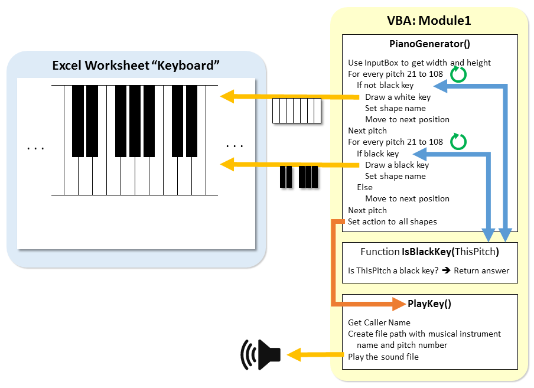
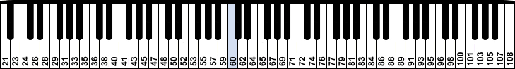

Click on the image to see it in its original size

The pitch numbers are shown on the keys
Set Width of each key to an appropriate value (e.g. 20)
Set Height of each key to an appropriate value (e.g. 100)
' Now we generate the white keys. Please refer to Part 1.2 and Part 1.3: White keys
For Pitch from 21 to 108
If this pitch is not a black key
Draw the white key
Move to the next position
End If
Next Pitch
' Now we generate the black keys. Please refer to Part 1.4: Black keys
For Pitch from 21 to 108
If this pitch is a black key
Draw the black key
Else
Move to the next position
End If
Next Pitch
Set action to all shapes
Function IsBlackKey(ThisPitch) . . . ' If the result of ThisPitch mod 12 is 1, 3, 6, 8, or 10 . . . ' the function should output True . . . ' otherwise output False End Function
x = a Or b ' This is only an example. You CANNOT do this!
x = a Or x = b ' This is the same example written correctly
MsgBox IsBlackKey(60) ' And then try other pitch numbers
If Not IsBlackKey(Pitch) Then . . . You may use a MsgBox to see how the function is behaving End If
For Pitch from 21 to 108
If the pitch is not a black key
Create a shape
Set fill color to be white and line color to be black
Set shape name appropriately
Move to the next position
End If
Next Pitch
Set Key = ActiveSheet.Shapes.AddShape( type, left, top, width, height )
Key.Fill.ForeColor.RGB = vbWhite ' Set the color of the shape to white Key.Line.ForeColor.RGB = vbBlack ' Set the border line color to be black
Reset LeftPos to be the starting position
For Pitch from 21 to 108
If the pitch is a black key
Create a shape
Set fill color and line color to be black
Set shape name appropriately
Else
Move to the next position
End If
Next Pitch
ShapeName = Application.Caller
Pitch = Mid( . . . )
Mid(text, start, length (optional))
If Len(Pitch) = 1 Then ' To handle the pitches 0, 1, ..., 9 Pitch = "00" & Pitch ElseIf Len(Pitch) = 2 Then ' To handle the pitches 10, 11, ..., 99 Pitch = "0" & Pitch End If ' If the length is 3 (for pitches 100-127), nothing needs to be done
Sheets("Keyboard").Shapes("Pitch60").OnAction = "'PlayKey'"
Instrument = Range("B1")
FilePath = ThisWorkbook.Path & "/sounds/" & Instrument & "/" & Instrument & Pitch & ".wav"
Sub PlayMusic() Dim Row As Integer, Column As Integer Dim FirstRow As Integer, LastRow As Integer Dim ThisNoteTime As Double, CurrentTime As Double ' Get the current time StartTime = Timer ' Timer is a VBA Function that tells you the time right now ' Store the size and location of the selected music Row = ActiveCell.Row ' .Row tells you the row of that cell (a number) Column = ActiveCell.Column ' .Column tells you the column of that cell (a number) ' Now let's get ready to play the music ' Before running this code, the user selected the top left corner of the music data FirstRow = Row ' We will start playing the music from the row of the top left corner ' Play the music notes until we encounter an empty cell (meaning no more music data) While Cells(Row, Column).Value <> "" ' While there is something in the cell ' This while loop repeatedly executes again and again, ' until the appropriate duration (the length of the time between 2 notes) ' has passed. Only then will it move on to the next row of music data. ' Work out how long we have to wait ' We do that by subtracting the time of this note from the time of the first note ThisNoteTime = Cells(Row, Column).Value - Cells(FirstRow, Column).Value ' Work out how long we have actually waited ' We do that by subtracting the time of this note from the current time CurrentTime = Timer - StartTime ' Timer is a function that tells you the time now ' We repeatedly check the time we have waited, until we have waited enough time ' After we have waited enough time, then we can play the note If ThisNoteTime < CurrentTime Then ' Here we select the current row of music which is being played. ' This is not really necessary for playing the music, but it ' is helpful to see exactly which line of music data is being played. Cells(Row, Column).Select ' If the pitch is a single digit number e.g. 6 then we need to convert it ' to "006", because "006" is used in the sound filename containing the sound ' If the pitch is a double digit number e.g. 72 then we need to convert it ' to "072", because "072" is used in the sound filename containing the sound Pitch = Cells(Row, Column + 1).Value If Len(Pitch) = 2 Then Pitch = "0" & Pitch ' Add a single zero at the front ElseIf Len(Pitch) = 1 Then Pitch = "00" & Pitch ' Add two zeros at the front End If ' Get the instrument name from the worksheet e.g. piano Instrument = Range("B1").Value ' Now we need to build the complete path, including the filename FilePath = ThisWorkbook.Path & "/sounds/" & Instrument & _ "/" & Instrument & Pitch & ".wav" ' If you want to check what FilePath looks like, do MsgBox FilePath ' Now we execute the PlayFile subroutine, it will play the sound file PlayFile FilePath ' Move to the next row of music data Row = Row + 1 End If ' DoEvents helps to make sure Excel updates the display, and other things ' Possibly, you may not need to do it for this project, to be safe we will include it DoEvents Wend ' Now we select the cell in the top left corner ' This helps when you play the music more than once Cells(FirstRow, Column).Select ' .Select is the same as if you clicked on the cell End Sub
MsgBox Range("B3").Row will show the number 3, which is the row of the cell
MsgBox Range("B3").Column will show the number 2, which is the column of the cell
Range("B3").Select means cell B3 is selected (as if you clicked on it)
=F13 * Speedwhere F13 is the top left corner of the music data
=G13 + PitchOffsetwhere G13 is the cell on the right of the top left corner of the music data
{kind=link}
{kind=link}